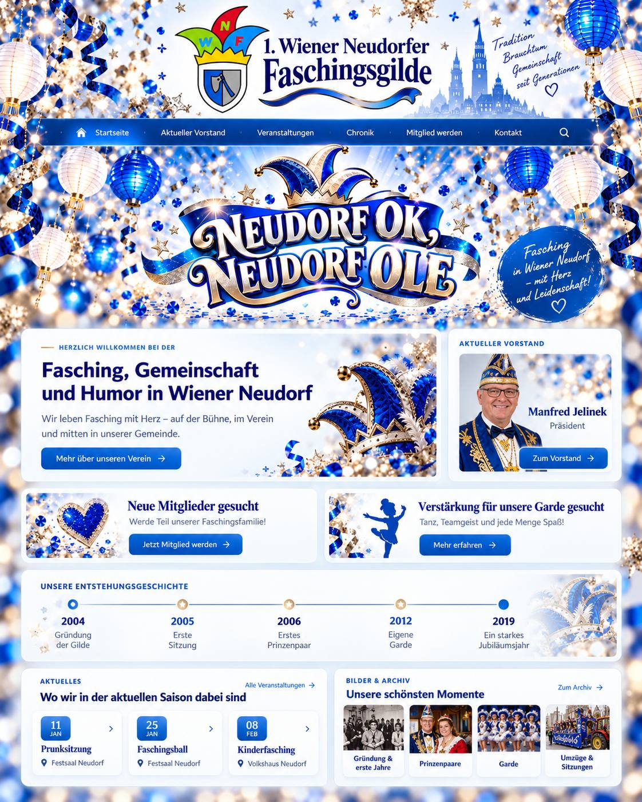

Die 1. Wiener Neudorfer Faschingsgilde verbindet Tradition mit Gemeinschaft. Wir treffen uns regelmäßig, schmieden Pläne, besuchen Veranstaltungen und freuen uns über Menschen, die mitmachen, mitlachen und neue Ideen einbringen möchten.
Manfred Jelinek
Präsident
Der Vorstand wird auf der fertigen Seite mit Foto und Funktion vorgestellt. Das echte Porträt kann später direkt eingesetzt werden.
Hier werden Besuche, Umzüge, Sitzungen und andere Aktivitäten angekündigt oder im Nachhinein mit einigen Bildern dokumentiert.
Die 1. Wiener Neudorfer Faschingsgilde wurde im Frühjahr 2004 gegründet. Auf Initiative des damaligen Bürgermeisters Herbert Janschka führten Kurt Badurek und Peter Eberlein erste Gespräche über die Gründung einer eigenen Faschingsgilde in Wiener Neudorf. Beide verfügten bereits über langjährige Erfahrung in anderen Faschingsvereinen.
Im April 2004 fand im Gasthaus Froschau das erste Treffen mit acht interessierten Personen statt. Damit war der Grundstein für die 1. Wiener Neudorfer Faschingsgilde gelegt. Noch im selben Jahr übersiedelte der Vereinssitz ins Willixhofer-Stüberl. Sabine und Gerhard Willixhofer erklärten sich bereit, das erste Prinzenpaar der Gilde zu werden.
Bereits kurz nach ihrer Gründung durfte die junge Faschingsgilde eine besondere Aufgabe übernehmen: Im November 2005 richtete Wiener Neudorf das Niederösterreichische Landesnarrenwecken aus. Im Rahmen dieser Veranstaltung wurden Sabine und Gerhard Willixhofer zum Niederösterreichischen Landesprinzenpaar gekrönt.
Auch in den folgenden Jahren entwickelte sich die Gilde weiter. Unterstützung erhielt sie von der Marktgemeinde Wiener Neudorf, der Gemeindeverwaltung, dem Wirtschaftshof sowie von zahlreichen örtlichen Vereinen und Blaulichtorganisationen.
Bis heute stehen Gemeinschaft, Brauchtum und die Freude am Fasching im Mittelpunkt der Gilde.
Du hast Humor, Freude am Fasching und möchtest dich aktiv einbringen?
Dann bist du bei uns genau richtig!
Wir, die 1. Wiener Neudorfer Faschingsgilde, treffen uns regelmäßig zum Austausch, zum gemeinsamen Planen und um zu überlegen, bei welchen Veranstaltungen wir als Gilde mit dabei sein möchten – zum Beispiel bei Faschingsumzügen, Sitzungen oder anderen närrischen Veranstaltungen.
Wir suchen Menschen, die nicht nur „dabei sein“, sondern sich auch mit Ideen und Engagement einbringen möchten. Wichtig sind uns vor allem Gemeinschaft, Humor, Spaß und Freude am gemeinsamen Tun.
Du musst keine besonderen Vorkenntnisse mitbringen. Wenn du gerne lachst, offen für Neues bist und Lust hast, gemeinsam mit uns etwas auf die Beine zu stellen, freuen wir uns darauf, dich kennenzulernen.
Mach mit – wir freuen uns auf neue Gesichter in unserer Gilde!
Du tanzt gerne, magst Musik und möchtest Teil einer tollen Gemeinschaft sein?
Dann bist du bei uns richtig!
Unsere Garde soll wieder wachsen – und dafür suchen wir Kinder und Jugendliche, die Freude an Bewegung, Musik und gemeinsamen Auftritten haben.
Bei uns sind Mädchen und Burschen gleichermaßen willkommen. Auch Kinder mit Beeinträchtigungen sind herzlich eingeladen, bei uns mitzumachen. Wichtig sind nicht Vorkenntnisse oder Perfektion, sondern Freude am Tanzen, Teamgeist und Spaß an der Gemeinschaft.
Derzeit besteht unsere Garde nur noch aus einem Gardemädchen, weshalb aktuell kein regelmäßiges Training stattfindet. Sobald sich genügend Kinder melden, möchten wir wieder mit dem Training starten.
Unsere bisherigen Auftritte waren dabei keineswegs nur auf die Faschingszeit beschränkt. Neben Faschingssitzungen, Kinderfaschingsveranstaltungen und Umzügen war unsere Garde auch bei Weihnachtsfeiern, den Wiener Neudorfer Wochen und beim Mittelalterfest aktiv.
Diese Vielfalt möchten wir auch künftig beibehalten. Denn unterschiedliche Musikrichtungen, Kostüme und Anlässe sorgen für Abwechslung und machen das gemeinsame Tanzen noch spannender.
Wenn du Lust hast, Teil unserer Garde zu werden, melde dich bei uns. Wir freuen uns über jedes Kind, das gerne tanzt und gemeinsam etwas erleben möchte!
Die Kontaktdaten ergänzen wir, sobald du mir die endgültigen Angaben schickst.
Erinnerungen, Rückblicke und besondere Momente unserer Gilde.